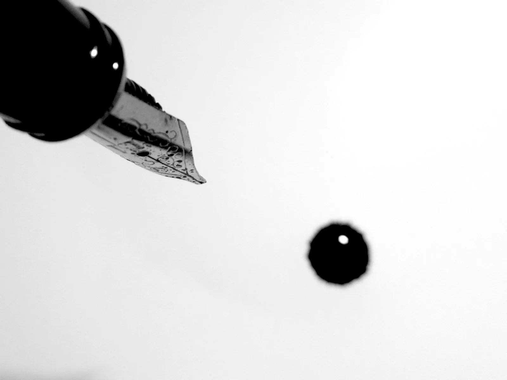
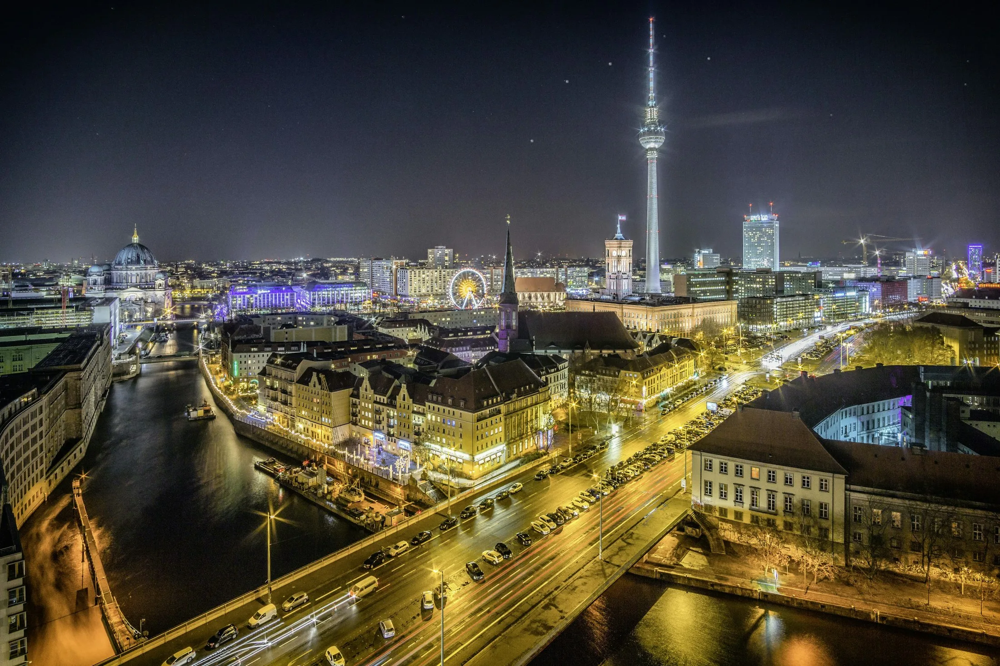

01
Debüt-Förderung
Der schwerste Text ist der erste. Wir begleiten Debütant*innen mit Lektorat, Bühnen und einem Netzwerk, das trägt — damit aus einem Manuskript ein Buch und aus einer Stimme eine Autorin wird.
Anfragen



Wir geben dem ersten Satz einen Ort — und begleiten Literatur von der Idee bis zum Publikum.
Haltung
Literatur entsteht nicht im Vorbeigehen. Sie braucht Zeit, Ruhe und manchmal einen ersten Vertrauensvorschuss. Unsere Förderprojekte schaffen genau das — für Schreibende und Übersetzende in Berlin, in jeder Phase ihres Werks.
Jedes Projekt folgt derselben Überzeugung: dass das geschriebene Wort Teil des kulturellen Gedächtnisses einer Stadt ist und seine Förderung eine öffentliche Aufgabe. Die folgenden Programme zeigen, wie wir diese Überzeugung in Arbeit übersetzen.
Der schwerste Text ist der erste. Wir begleiten Debütant*innen mit Lektorat, Bühnen und einem Netzwerk, das trägt — damit aus einem Manuskript ein Buch und aus einer Stimme eine Autorin wird.
AnfragenÜbersetzen heißt Weiterschreiben. Wir fördern literarische Übersetzer*innen, die Berliner Literatur in die Welt und die Welt nach Berlin tragen — und machen ihre Arbeit sichtbar.
AnfragenIn Werkstätten und Mentoraten bringen wir junge und erfahrene Stimmen zusammen. Handwerk, Haltung und ehrliche Kritik — der Raum, in dem Schreiben gelernt und geteilt wird.
Anfragen
Literatur gehört in die Kieze. Mit Lesereihen, Schreiborten und Begegnungen bringen wir das geschriebene Wort dorthin, wo die Stadt lebt — vielsprachig, offen, mitten unter den Menschen.
Anfragen
Mitmachen
Erzählen Sie uns in wenigen Sätzen von Ihrem Vorhaben — formlos genügt.
Wir melden uns, hören zu und überlegen gemeinsam, welche Förderung passt.
Mit Zeit, Raum und Rückhalt entsteht das Werk — und findet sein Publikum.